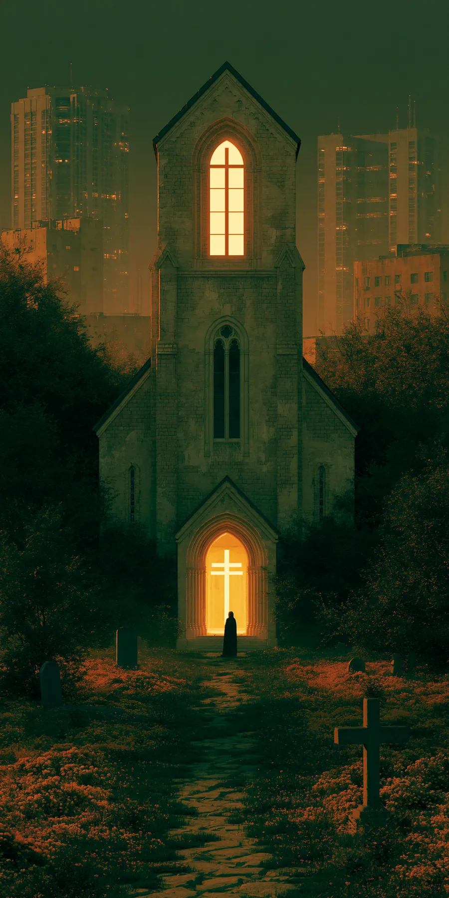
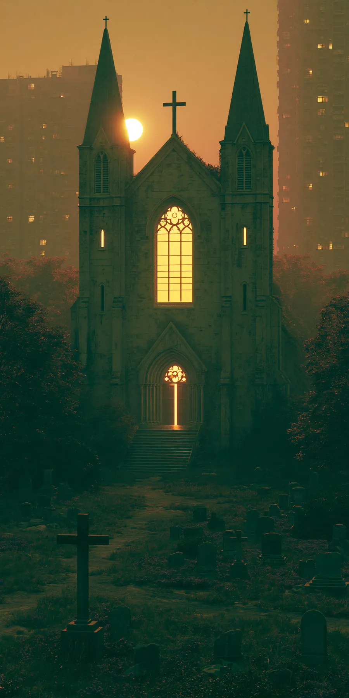

The doors of the church are always open. So, now, is the record of who walks through them. This exhibit follows one Sunday through every camera, database and stream it touches, and asks what a holy place is when it has uninvited guests.
Surveillance is a quiet guest. It does not take a seat, sign the guest book or put anything in the plate. It just stays.
offered hybrid worship in 2023. Before the pandemic, about 45% offered any online worship. REPORTED
of U.S. adults watch services online or on TV at least monthly without attending in person. FACT
communities use Flock license plate readers, by the company's count, with 30-day default retention. REPORTED
Tap each station on the route. Each one shows who may be watching, what they keep, for how long, and the case on the record that makes it more than a hypothetical.

A stream lets the sick, the far away and the homebound worship. It can also show a stranger who sat in the third pew. Set the dials and watch the trade between the two.

| Choice | Reach points | Exposure points |
|---|---|---|
| Public page / link / login / audio / none | 5 / 4 / 3 / 4 / 0 | 4 / 3 / 1 / 1 / 0 |
| Whole room / pulpit only (video only) | 0 / 0 | 4 / 0 |
| Indefinite / one week / live only | 3 / 2 / 0 | 4 / 1 / 0 |
An editorial rubric, scaled so the most open setting scores 100 on both. It is not a measurement. Reach credits replays because people who are sick or working on Sunday watch later; exposure credits faces, open access and time, because each one lets a stranger match a person to a place for longer. INFERENCE
Tap a point on the line.
INFERENCE The result is a patchwork. Whether a house of worship is protected now depends on whether its denomination sued, which court heard it, and which order covers it. That is a new kind of separation of church and state, drawn by injunction rather than by statute.
Court filings in a conspiracy case against ICE protesters show an undercover DHS agent at a February meeting at Prince of Peace Lutheran Church, recording license plates, and an agent wearing a wire to a self-defense class at University Baptist Church in May. A church member's sworn declaration says DHS watched people entering and leaving on Sundays. REPORTED
The government called it "standard law enforcement practice" aimed at people later charged, not peaceful protesters. Two Baptist bodies have asked a court to hold DHS in contempt of a February order. REPORTED
In January, protesters interrupted Sunday services at Cities Church, chanting "ICE out." A pastor listed on the church's website shares the name and details of the acting director of ICE's St. Paul field office. The protesters livestreamed it. REPORTED
The Justice Department opened a civil rights investigation, saying the protesters were "desecrating a house of worship." A participant called the probe "a sham." REPORTED
INFERENCE Each side describes the other as the intruder. Both events end on camera: one in a court exhibit, one on a Facebook livestream. The sanctuary was entered in both directions, and recorded both times.
We found no public record of ICE using a church livestream to identify or locate anyone. WATCH The stream risk in Exhibit B is a capability, not a documented practice. The Minnesota surveillance targeted protest organizing in church buildings, not worship services. Flock's limits on federal access are the company's own description. The incident counts for churches come from an advocacy group's open-source tally.
What would change this read: a court record showing livestream footage used in an enforcement action; the merits rulings now ordered in the DC case; audits of plate-reader searches near houses of worship.
This exhibit carries S2·05's camera-density and retention math into the one room most people assumed was off the map. It adds a live case to S2·12's instrument map: protection of worship now runs through court injunctions for named plaintiffs, a patchwork rather than a rule. INFERENCE